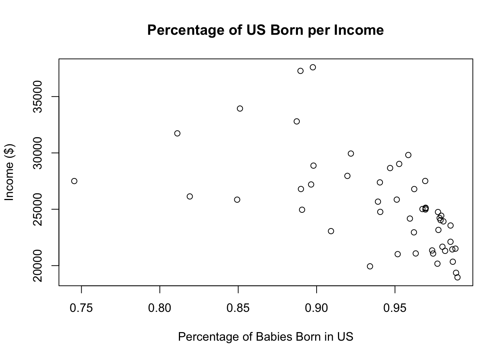
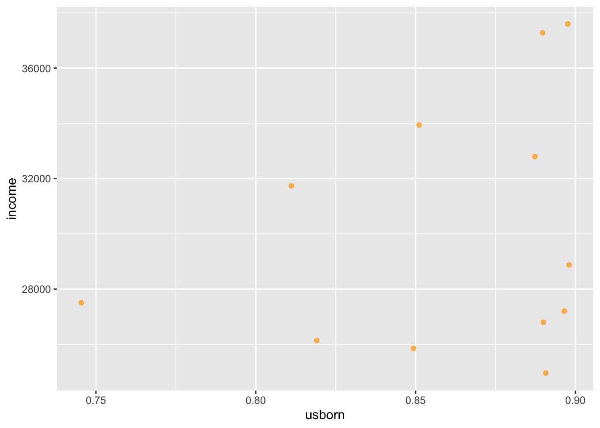
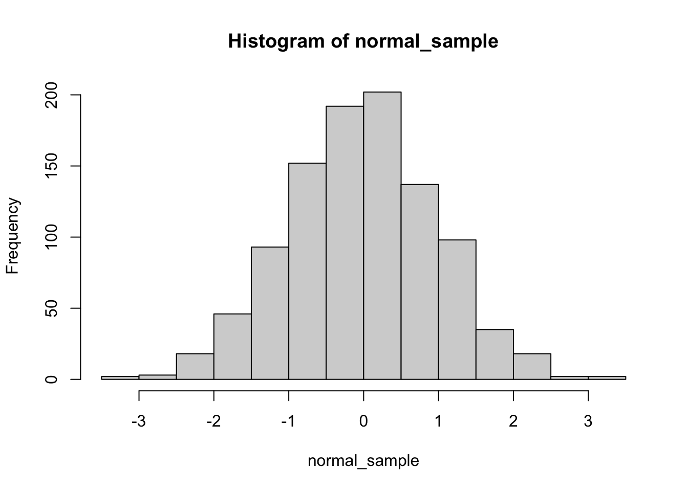
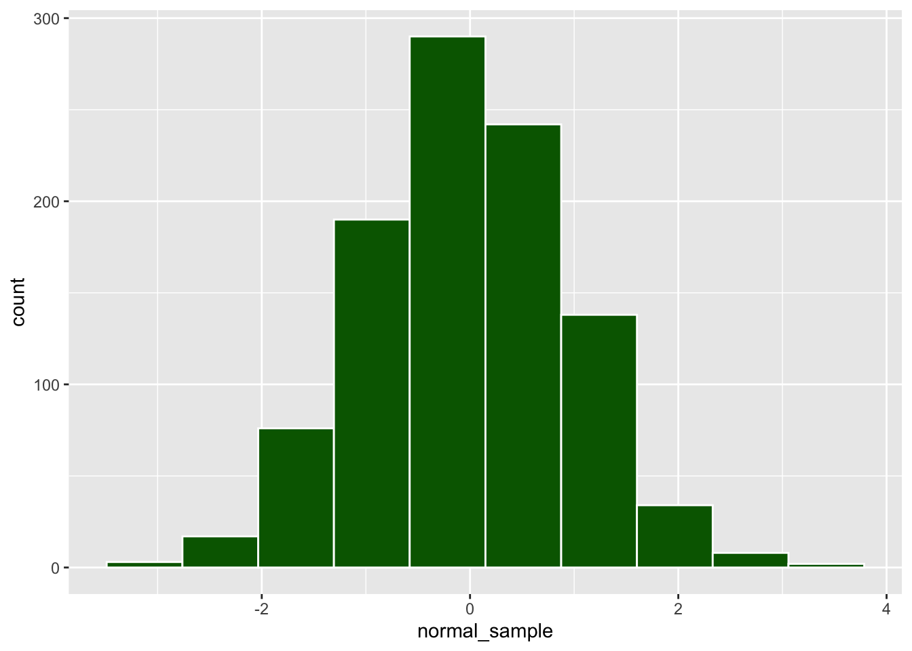

This short getting started guide introduces the basics of R Markdown (.Rmd) files, which ‘knit’ together text and code, and some style conventions.
Elements of .Rmd: code chunks and text
Executing codes within .Rmd files in RStudio
Code style guidelines
Controlling code chunk display in knitted documents
Controlling text display in knitted documents
Math display
Report formatting and code appendices
R Markdown: integrating text and code
R Markdown allows for easy building of documents that integrate codes and code results with text. R Markdown files (.Rmd) contain code chunks and regular text. The code chunks are executable from within RStudio as the document is being composed and edited. This makes .Rmd a great choice for projects involving data analysis in R, because one can simultaneously compose codes and narrative without having to keep track of multiple files or documents. This is very conducive to reproducible research and version control.
When an R Markdown file is ‘knitted’ in RStudio, a report is generated that displays text and code and code results according to author-specified parameters in the document. Your first task in this lab is to experiment with code chunk options and text markdown in the .Rmd file that control the display of codes, text, and results in the knitted document.
Codes: the “R” in R Markdown
First we’ll examine aspects of the .Rmd file that pertain to R codes, output, and graphics.
Basic functions
While composing a document, code chunks can be written and executed from within the .Rmd file in RStudio. Below this paragraph in the .Rmd file is an example code chunk with some simple commands. Try running individual lines from the .Rmd file for this document within RStudio. The results will appear below the chunk and in the console.
Reminder: you can execute code by placing your cursor on the line you wish to run and pressing CTRL + ENTER or CMD + ENTER.
Tip: If you wish to run an entire chunk, use the ‘play’ icon in green that appears in the upper right corner of the chunk.
Now notice that the code chunk is set off by three back-ticks and some text in braces ```{some text}. The first part of the text in braces is alwaysr; optionally, a name for the chunk (above, example-chunk); then a comma, followed by code chunk options that control how the code will be displayed in the knitted document.
Knitting document
Click the ‘Knit’ button with the ball-of-yarn icon and have a look at the knitted document. For the code chunk above, nothing appears! To change this behavior we can change the code chunk options. To get started, let’s tinker with those options.
To knit to pdf or HTML, go all the way to the top of the document, and change the output part of the header block to html_document or to pdf_document respectively.
R code chunks options
echo: Display code in output document (default = TRUE)
eval: Run code in chunk (default = TRUE)
message: Display code messages in document (default = TRUE)
warning: Display code warnings in document (default = TRUE)
fig.align: “left”, “right”, or “center”.
fig.height, fig.width: Dimensions of plots in inches.
Your turn
Make each of the following changes one by one, and re-knit after each change to examine the effect on the knitted document.
Change the name of the chunk to your favorite author’s last name. After knitting, examine the ‘Render’ tab in RStudio and look for where the new name appears. Try introducing a command in the code chunk that will produce an error, and knit again. How does naming the chunk prove to helpful in this instance?
Answer:
Change the results = 'hide' option to results = 'markup'. Also try results = 'asis'. What is the difference?
Answer:
Remove the results option altogether.What is the default behavior? Now go all the way to the top of the .Rmd file and examine the setup chunk. Try changing the results option there to one of the other options. After examining the effect on the knitted document, revert to results = 'markup'.
Answer:
Try adding echo = T to the example code chunk. What happens?
Answer:
Configure the code chunk options so that the knitted document shows the codes themselves but not the results.
Matrices
# using matrix() functionmat <-matrix(c(3,2,5,3,1,4,7,4,9), nrow =3)mat
[,1] [,2] [,3]
[1,] 3 3 7
[2,] 2 1 4
[3,] 5 4 9
# fill matrix by rowmat <-matrix(c(3,2,5,3,1,4,7,4,9), byrow=T, nrow =3) mat
[,1] [,2] [,3]
[1,] 3 2 5
[2,] 3 1 4
[3,] 7 4 9
# Using rbind() or cbind() Functionx <-1:5y <-2:6mat <-cbind(x,y) # create a matrix by combining vectors column-wisemat
x y
[1,] 1 2
[2,] 2 3
[3,] 3 4
[4,] 4 5
[5,] 5 6
mat <-rbind(x,y) # create a matrix by combining vectors row-wisemat
[,1] [,2] [,3] [,4] [,5]
x 1 2 3 4 5
y 2 3 4 5 6
# How to name the rows and columns of an R matrix?# Using dimnames argument in matrix() functionrnames <-c("row1","row2","row3")cnames <-c("col1","col2","col3")mat <-matrix(c(3,2,5,3,1,4,7,4,9), nrow=3, dimnames=list(rnames,cnames))mat
col1 col2 col3
row1 3 3 7
row2 2 1 4
row3 5 4 9
# Using rownames() or colnames() functionsmat <-matrix(c(3,2,5,3,1,4,7,4,9), nrow =3)rownames(mat) <-c("row1","row2","row3")colnames(mat) <-c("col1","col2","col3")mat
There are multiple ways to plot in R, either using base R or ggplot2
head(eco)
usborn income home pop
Alabama 0.98656 21442 75.9 4040587
Alaska 0.93914 25675 34.0 550043
Arizona 0.90918 23060 34.2 3665228
Arkansas 0.98688 20346 67.1 2350725
California 0.74541 27503 46.4 29760021
Colorado 0.94688 28657 43.3 3294394
#?ecoplot(eco$usborn, eco$income,xlab ="Percentage of Babies Born in US", ylab ="Income ($)",main ="Percentage of US Born per Income")

Now once the plot looks nice, try knitting. Notice that the plot does not appear in the knitted document. This is due to the fig.show = 'hide' option; remove this and re-knit, and the plot should appear.
Your turn
Often it is necessary to resize plots for knitting to avoid oversize or cut-off images. Try the following chunk options one by one and knit between each change to take note of the effect in the knitted document.
Add the option fig.width = 2 and examine the output. Tinker with the option by changing the number until you find a display width that you like.
Add the option fig.height = ..., specifying a number of your choosing for the height. Play until you find a display height that you like.
Notice that the alignment is off-center. Try adding fig.align = 'center'.
There are many other code chunk options, but those come up particularly often. The above and other options are summarized in the R Markdown cheatsheet.
Code style guidelines
A few points of style can dramatically improve readability:
<- is used for assignment (not =, used to specify function arguments)
every comma is followed by a space
spaces on either side of = and <-, logical operations, and arithmetic operators (‘infix’ operators)
short explanatory comments above groups of lines preceded by a blank line
use descriptive names with _ to introduce spaces separating name components
break long commands over multiple lines
specify function arguments explicitly by name
RStudio Settings Tips
A few RStudio settings that make writing and reading code much easier.
Rainbow Parentheses
Rainbow parentheses color-code matching pairs of parentheses, brackets, and braces, making it much easier to spot mismatched or missing delimiters.
To enable: go to Tools > Global Options > Code > Display and check the box for Rainbow parentheses.
Once enabled, nested parentheses like mean(c(1, sd(x), var(y))) will each appear in a distinct color, so you can immediately see which opening and closing symbols are paired.
Render Output in Viewer Pane
By default, knitting an .Rmd file opens the output in a new window or browser tab. You can instead have it appear in the Viewer pane inside RStudio, which keeps everything in one place.
To enable: go to Tools > Global Options > R Markdown and set Show output preview in to Viewer Pane.
Brief Tidyverse intro
Other useful functions in the tidyverse are group_by(),arrange(),mutate() , and summarise() For more info on tidyverse function go to https://r4ds.had.co.nz/transform.html/. You can use glimpse() (from tidyverse package) or str() to get a quick look at a dataset.
# Install Tidyverse and dplyr if you haven't already#install.packages("tidyverse")#install.packages("dplyr")library(tidyverse)library(dplyr)eco %>%dplyr::select(usborn) %>%# select usborn columnfilter(usborn <=0.9) %>%# filter usborn leq 0.9slice(1:5) # print out only first 5 rows
usborn
California 0.74541
Connecticut 0.89761
DC 0.88972
Florida 0.84932
Hawaii 0.81911
The \(\%>\%\) is commonly referred to as the “pipe operator” and is used to make code more readable by chaining together a sequence of operations.
eco %>%filter(usborn <=0.9) %>%# filter usborn leq 0.9ggplot() +# scatterplot with usborn on x axis and income on ygeom_point(aes(x = usborn, y = income),# orange color data points. alpha changes the transparency of the pointscolor ="orange", alpha =0.7)

Distributions
Can obtain random sample from a specific distribution: Type in ?d istribution in console to see all the different distributions in R.
p for ‘probability’, the cumulative distribution function (c. d. f.)
q for ‘quantile’, the inverse c. d. f.
d for ‘density’, the density function (p. f. or p. d. f.)
r for ‘random’, a random variable having the specified distribution
# Type '?distribution' in console to see all the different distributions in R.# Remember to set seedset.seed(555)# r for “random”, a random variable having the specified distributionrnorm(10, mean =0, sd =1)
normal_sample <-rnorm(1000, mean =0, sd =1)mean(normal_sample) # mean of sample
[1] -0.02762708
hist(normal_sample) #

ggplot() +geom_histogram(aes(x = normal_sample), # using ggplot to make histogramsbins =10, color ="white", # control the number of binsfill ="darkgreen")

Text: the ‘Markdown’ in R Markdown
Now we’ll look over the text aspects of .Rmd documents.
Narrative text
You’ve probably noticed by now that headers are set off by #, ##, ### in the .Rmd document, and these are rendered in nice format in the knitted document. These are examples of text markdown elements, which are used to control the display of text in the knitted document. Some common ones are:
R Markdown documents also integrate math display using math expressions. For inline math environments, enclose expressions in $, such as $\left(\frac{1}{x}\right)$, which appears as \(\left(\frac{1}{x}\right)\). The .Rmd file has dynamic previewing while building a document; hovering your cursor over the expression while editing will show you what it will look like in the generated document.
Equation blocks can be created by enclosing math expressions in $$. For example, $$Y = \mathbf{x}\beta + \epsilon$$ displays as: \[Y = \mathbf{X}\beta + \epsilon\]
For a list of LaTeX math syntax, see wikibooks. (These expressions also work on Nectir using the same syntax!)
Your turn
Write the density of a Gaussian random variable in an equation block. Below that, write the mean and variance in inline math mode (preferably in a short sentence).
The mean is \(\mathbb{E}[X] = \mu\) and the variance is \(\text{Var}(X) = \sigma^2\).
Submission Instructions
Before submitting, knit your completed lab to PDF:
At the top of this file, make sure the output field in the YAML header includes pdf_document: default.
Click the Knit button and select Knit to PDF.
Before knitting, double-check that all code chunk options (echo, results, fig.show, fig.width, fig.height, etc.) are set exactly as the lab instructions asked — do not change them just to clean up the output.
Once the PDF has been generated, review it to make sure all requested output, plots, and written answers appear correctly.
Upload the PDF to Gradescope under the assignment for this lab.
Extra: code appendix
Imagine you’re writing a report of some data analysis (e.g., a homework for this class). While it is lovely that R Markdown allows you to integrate your analysis and results directly into your written report, very likely there are many code chunks that need to be run but not necessarily shown in your report to answer the questions of interest.
It is good practice to suppress codes or output that your readers don’t need to see (with the results = 'hide' and/or include = F chunk options) in the body of your report. Examples include:
setup commands like package loads
data import
printed data frames
Consider setting the global options to suppress all code and output, so that you have to specifically choose to show a code chunk or result. This is a better policy than defaulting to showing all code and output, which typically results in an unreadable document.
However, your TA might need to check some of those codes if they spot an error somewhere. In that case, including an appendix of all codes at the end can be helpful.
# To clean the environmentrm(list=ls())# default code chunk optionsknitr::opts_chunk$set(echo = F,results ='markup',message = F, warning = F) # Install Packages# install.packages("faraway")# install.packages("tidyverse")# load packageslibrary(faraway)library(tidyverse)# concatenation `c()`c(1, 3, 2, 5)# assignment `<-`x <-c(1, 3, 2, 5)x# sequence of numbers starting from 1 until 5 by 1x <-seq(from =1, to =5, by =1) # repeats 1 four timesx <-rep(1, times=4) # repeats each value in 1,2,3,4 two timesx <-rep(1:4, each=2) # check object structure `str()`str(x)x[1]mean(x)sd(x)var(x)sort(x)summary(x)# vectorized arithmetic and logicy <- x +1yx > y# using matrix() functionmat <-matrix(c(3,2,5,3,1,4,7,4,9), nrow =3)mat# fill matrix by rowmat <-matrix(c(3,2,5,3,1,4,7,4,9), byrow=T, nrow =3) mat# Using rbind() or cbind() Functionx <-1:5y <-2:6mat <-cbind(x,y) # create a matrix by combining vectors column-wisematmat <-rbind(x,y) # create a matrix by combining vectors row-wisemat# How to name the rows and columns of an R matrix?# Using dimnames argument in matrix() functionrnames <-c("row1","row2","row3")cnames <-c("col1","col2","col3")mat <-matrix(c(3,2,5,3,1,4,7,4,9), nrow=3, dimnames=list(rnames,cnames))mat# Using rownames() or colnames() functionsmat <-matrix(c(3,2,5,3,1,4,7,4,9), nrow =3)rownames(mat) <-c("row1","row2","row3")colnames(mat) <-c("col1","col2","col3")matmat%*%mat # matrix multiplicationsolve(mat) # Matrix inversion for non-singular matricesdiag(mat) # extract the diagonal elements of the matrixt(mat) # transpose of matrixsubject <-c("English", "Maths", "Chemistry", "Physics")percentage <-c(80, 100, 85, 95)df <-data.frame(subject, percentage)df# Appending a column to a DataFramedf$GPA <-c(3.0, 4.0, 3.0, 4.0)dfhead(eco)#?ecoplot(eco$usborn, eco$income,xlab ="Percentage of Babies Born in US", ylab ="Income ($)",main ="Percentage of US Born per Income")library(ggplot2)# scatterplotggplot(data = eco, mapping =aes(x = usborn, y = income)) +geom_point() +labs(title ="Percentage of US Born per Income",y ="Income ($)",x ="Percentage of Babies Born in US") +theme()#?labs# Install Tidyverse and dplyr if you haven't already#install.packages("tidyverse")#install.packages("dplyr")library(tidyverse)library(dplyr)eco %>%dplyr::select(usborn) %>%# select usborn columnfilter(usborn <=0.9) %>%# filter usborn leq 0.9slice(1:5) # print out only first 5 rowseco %>%filter(usborn <=0.9) %>%# filter usborn leq 0.9ggplot() +# scatterplot with usborn on x axis and income on ygeom_point(aes(x = usborn, y = income),# orange color data points. alpha changes the transparency of the pointscolor ="orange", alpha =0.7)# Type '?distribution' in console to see all the different distributions in R.# Remember to set seedset.seed(555)# r for “random”, a random variable having the specified distributionrnorm(10, mean =0, sd =1)runif(10, min =0, max =1)normal_sample <-rnorm(1000, mean =0, sd =1)mean(normal_sample) # mean of samplehist(normal_sample) #ggplot() +geom_histogram(aes(x = normal_sample), # using ggplot to make histogramsbins =10, color ="white", # control the number of binsfill ="darkgreen")
Submission Instructions
Before submitting, knit your completed lab to PDF:
At the top of this file, make sure the output field in the YAML header includes pdf_document: default.
Click the Knit button and select Knit to PDF.
Before knitting, double-check that all code chunk options (echo, results, fig.show, fig.width, fig.height, etc.) are set exactly as the lab instructions asked — do not change them just to clean up the output.
Once the PDF has been generated, review it to make sure all requested output, plots, and written answers appear correctly.
Upload the PDF to Gradescope under the assignment for this lab.